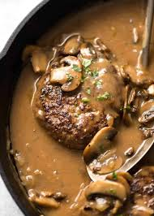

Midwest Salisbury Steak

Mouthwatering Salisbury Steak
This recipe for Salisbury steak uses good quality ground sirloin and tastes wonderful. You won't have to drain any grease from the patties once they've browned. Serve over mashed potatoes, egg noodles, or rice. Simply delightful!
Ingredients
- 1 pound ground sirloin
- Half cup panko bread crumbs
- 1 egg, beaten
- 2 tablespoons milk
- Half package dry onion soup mix
- 1 teaspoon Worcestershire Sauce
- Quarter teaspoon ground black pepper
- Gravy
Steps
- Gather the ingredients.
- Make the patties.
- Heat a skillet over medium heat. Cook patties in hot skillet until browned, 3 to 5 minutes per side.
- Prepare the gravy.
- Place browned patties into gravy;simmer until very tender, about 30 minutes or to an internal temp of 160 degrees.
- Serve and enjoy!